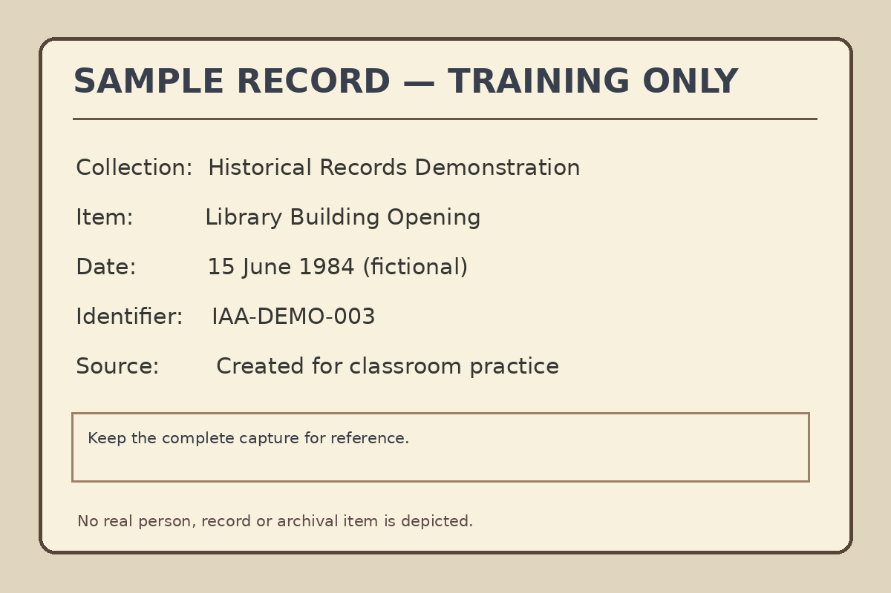
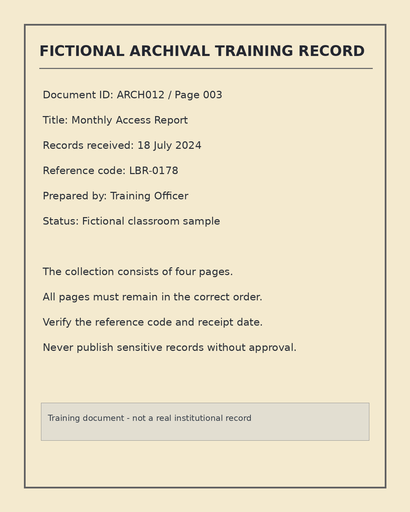

Course Home
12-unit programme · All 12 units availableMultimedia in Librarianship and Records & Archives Management
Learn to understand, create, organise, deliver and preserve multimedia resources for libraries, records offices and archives. Study one common course, then apply the skills to your professional field.
How you will learn
Understand → Explore → Practise → Apply → Evaluate. Each unit has detailed notes, presentation slides, guided activities and self-checks. Start with the Notes tab, then work through the examples and practical activities before trying the quiz.
Two professional perspectives
BLISS: library services, digital exhibitions and information literacy.
BRIM: digital records, archives, authenticity and access.
How to submit work
Follow the submission instructions announced in class. Progress buttons on this site track only personal study on this device; they do not submit assignments.
New to multimedia? Start here
A simple example: a digital exhibition may combine a historical photograph, a short explanation, a recorded interview and links between exhibits. The photograph shows an event, the explanation provides context, the recording adds a voice and the links let visitors choose what to explore. That combination is multimedia.
How the course builds: Units 1–2 explain the basics; Units 3–6 cover producing and delivering media; Units 7–9 connect content for users and search; Units 10–11 protect information and people; Unit 12 brings everything together in a small project.
You do not need experience with photo editing, audio production or web programming before reading Unit 1.
Course units
All 12 units are available, with detailed notes, slides, practicals, review questions and quizzes.
From multimedia foundations to professional projects
Begin with media concepts. Develop creation and technical skills, then organise, preserve and publish multimedia resources for a real information-service problem.
Learning pathway
All students study the same core content. The professional case studies and assignments connect the concepts to either librarianship or records and archives management.
Unit-by-unit outline
Course learning outcomes
- Explain multimedia concepts, elements, systems and professional applications.
- Differentiate media formats and make suitable production, access and preservation choices.
- Create basic image, audio, video and interactive multimedia resources.
- Plan and document a quality-controlled digitisation workflow.
- Organise and describe multimedia resources for retrieval using suitable metadata.
- Apply preservation, accessibility, security, legal and ethical principles.
- Develop and evaluate a small multimedia information service or digital collection.
Official assessment dates, grading and submission arrangements are communicated separately.
Introduction to Multimedia and Professional Applications
What multimedia means, what its elements do, how multimedia differs from hypermedia, and how digital and analogue media are used in libraries, records offices and archives.
Unit progress is saved in this browser only.
Unit 1 lecture slides
These slides contain definitions, explanations, examples, and applied questions. Use Presentation Mode to view them online, or download the editable PowerPoint for offline learning and classroom use.
Presentation Mode supports Previous/Next, left/right arrow keys, Escape and vertical scrolling within longer slides. Controls stay below the content.
1. Multimedia element explorer
Select an element to see its role in an information service.
2. Linear or non-linear?
Compare a fixed sequence with a user-selected route.
3. Analogue or digital?
Choose an example and inspect how information is represented.
4. Build a multimedia service
Select a professional setting, then explore suitable media and a design trade-off.
Guided Practical 1 — Audit a multimedia service
Purpose: observe how multimedia elements support users, then propose a small improvement grounded in professional practice.
Suggested practice time: 40–60 minutes, depending on available equipment.
- Select a sample service. Use a university library website, a digital collection, an archives exhibition, or the model scenario below. Do not use restricted records.
- Record the audience and purpose. Who will use it, and what information or task should it support?
- Identify at least four multimedia elements. Record one example for each and explain its purpose. If an element is absent, write “not present”.
- Map the navigation. Decide whether the experience is mainly linear, non-linear or mixed, and justify your choice.
- Assess two benefits and two limitations. Consider access, clarity, inclusion, bandwidth, equipment or maintenance.
- Recommend one improvement. Explain which users benefit, what media you would add or change, and how you would check that the change works.
Digital library orientation
Text explains how to borrow books, images show locations, a short video demonstrates catalogue search, and links let students select topics.
Virtual archival exhibition
Images show historical records, captions explain context, an audio excerpt presents oral testimony, and a menu lets visitors explore themes.
Practical report template
Prepare a one- to two-page report using this structure:
2. Target users
3. Multimedia elements and roles (table)
4. Navigation type and explanation
5. Benefits, limitations and one improvement
6. Any sources or permissions relevant to your example
If you cannot access an online service, use one of the two model scenarios above. The point is to explain the media choices, not to copy a website.
Unit 1 formative quiz
Answer all 10 questions, then select Grade quiz. The feedback explains the reasoning, not just the correct option. This is a self-study activity, not an official examination submission.
Unit 1 application assignment — Multimedia service concept
Task: propose a small multimedia resource addressing a realistic need in your professional field. Produce a clear concept document; no video editing or coding is required in this first unit.
Library information service
Examples: a new-student orientation guide, information-literacy mini-exhibition, or library opening-hours explainer.
Records or archives service
Examples: an archival exhibition on a local event, a public records access guide, or a document-handling awareness resource.
What to submit
- Project title, problem statement and intended users (one short paragraph each).
- Objectives: two or three outcomes for the intended users.
- Media plan: at least three multimedia elements and the reason for each.
- Navigation sketch: linear, non-linear or hybrid, with a simple diagram.
- One accessibility measure and one content-rights/permission precaution.
- Potential benefits, limitations and success criteria.
Suggested length: 2–3 pages, excluding diagrams and references. Due date: follow current class announcements.
Practice rubric (20 marks)
| Criterion | Marks |
|---|---|
| Problem, audience and objectives | 5 |
| Media selection and justification | 5 |
| Navigation plan | 4 |
| Accessibility, rights and risks | 4 |
| Clarity and organisation | 2 |
| Total | 20 |
Submission: use the method announced by your lecturer. This website does not collect or send your assignment, and marking this task complete does not submit it.
Digital Media Fundamentals and Visual Communication
Learn to distinguish pixels, raster and vector graphics, plan image size and colour, and make professional visuals readable and useful for library and archives audiences.
Unit progress is stored in this browser only.
Unit 2 lecture slides
These 31 self-contained slides combine explanations, examples, calculations and BLISS/BRIM applications. Review them in Presentation Mode on this site or download the editable PowerPoint.
Presentation controls stay below scrollable slide text. Use the Previous/Next buttons, arrow keys and Escape.
1. Raster and vector scaling explorer
Change the displayed size of a small raster-style pixel grid and of an SVG vector icon. Observe the fixed raster blocks while the vector shapes remain smooth.
2. Image dimensions and data-size calculator
Enter dimensions for a hypothetical uncompressed raster pixel payload. This is not an estimate of JPEG/PNG saved-file size.
Formula: bytes = width × height × bits/pixel ÷ 8; print width = pixels ÷ PPI. MiB uses 1,048,576 bytes.
3. RGB colour mixer
Explore RGB values used for screen colours. This demonstrates additive digital values—not print conversion.
4. Readable-text contrast checker
Test a pair of solid colours against WCAG 2.2 AA contrast thresholds. A passing ratio does not replace broader accessibility testing.
Example caption: view the complete record and its description.
Ordinary text: 4.5:1; qualifying large text: 3:1; exceptions apply.
5. Typography and hierarchy studio
Choose a text family and relative size. Observe how the message's legibility and hierarchy change.
Library Research Support
Wednesday · 2:00 pm
Learn how to find scholarly sources and evaluate information.
Visit the library help desk for registration details.6. Compare two visual layouts
Inspect an intentionally crowded notice and a revised version. Explain the specific principles that changed.
Guided Practical 2 — Analyse and improve a visual resource
Goal: explain technical media properties, design two layout alternatives and justify a clearer version for an information-service audience.
Suggested guided session: 60–90 minutes. Use only your own work, openly licensed assets or resources you have permission to use.
- Choose a context. BLISS: a student-facing library event or guide. BRIM: a record description card or a small historical exhibit entry.
- Identify the intended use. Is the output intended for a screen, print or both? Name the audience and task.
- Inspect the media. Note raster/vector, pixel dimensions (where relevant), aspect ratio and whether any resampling is needed.
- Do one calculation. Estimate uncompressed bytes or intended print dimensions. Clearly state your assumptions.
- Plan two layouts. Draw or build a crowded first draft and a more deliberate version using hierarchy, proximity, alignment and spacing.
- Check inclusivity. Use readable text contrast, appropriate labels, non-colour cues and a sensible mobile-friendly order.
- Get peer feedback. Ask a colleague to find the title, date or archival identifier; note what they struggled to locate.
- Report your decision. Explain what improved and how you documented any changes to source media.
Library event announcement
Make the service, date, venue and next action easy to recognise. Explain why your image and type choices support new library users.
Archival description card
Prioritise item title, date, provenance and an accurate access image. Identify derivative edits and avoid misleading crops.
Report template
Use the downloadable structured template, including media properties, two layout drafts, accessibility checks, source permissions and peer comments.
Unit 2 formative quiz
Answer the 12 questions, then grade to see explanations. Calculations and visual-design decisions are included. The quiz is for self-study, not official submission.
Unit 2 application assignment — Design a visual information resource
Use this unit's technical and visual-design principles to produce one useful and clearly explained information resource.
Library notice or infographic
Promote an information-literacy workshop, guide users to e-resources, or explain a borrowing service.
Archive or records visual
Create an archival-item display, themed exhibition card or records-handling information graphic.
Required outputs
- A one-page visual design, exported as PDF or PNG.
- A one- to two-page rationale covering audience, purpose and necessary information.
- Dimensions, raster/vector choices, typography, colour and layout explanations.
- Accessibility check, source/permissions and appropriate master/derivative practice.
- Brief peer feedback and a documented improvement.
Practice rubric — 20 marks
| Criterion | Marks |
|---|---|
| Audience, purpose and essential information | 4 |
| Technical decisions (dimensions, colour, image type) | 4 |
| Hierarchy, typography and clarity | 5 |
| Accessibility and responsible use of sources | 4 |
| Rationale, peer evaluation and organisation | 3 |
| Total | 20 |
Official deadline and submission method: follow current lecturer announcements.
The completion button saves personal study progress on this device. It does not upload or submit coursework.
Digital Images and Image Editing
Understand capture quality, choose formats, prepare responsible access derivatives, compare editing operations and check optical character recognition (OCR).
Progress is saved in this browser only.
Unit 3 self-contained slides
Includes 31 slides with definitions, worked explanations, examples, cases and takeaways. The online slide viewer keeps navigation controls below long slide content.
1. Crop versus complete source
Examine a synthetic demonstration record. Switch between a complete image and a close crop; notice that a crop can conceal an identifier or note.

2. Editing preview: brightness and contrast
Adjust a display preview only. This tool does not modify or save the source image.
3. Resize and uncompressed-size calculator
Enter source dimensions and target width to estimate proportional scaling, then estimate a 24-bit RGB uncompressed pixel payload.
Dimensions and payload are estimates; saved-file size depends on compression and file overhead.
4. Choose a format for a purpose
Choose a use-case and inspect a reasonable format strategy, including preservation and access trade-offs.
5. OCR verification challenge
The pretend OCR engine produced the text below. Check it against the known source wording, type a corrected transcription and verify.
Sample OCR: L1BRARY REC0RDS 1984
This example illustrates common OCR mistakes; it does not run OCR on uploaded images.
6. Master and derivative workflow
Choose a file role to see which edits or access uses make sense.
Guided Practical 3 — Make and document an access image
Suggested duration: 70–90 minutes depending on equipment. Use the synthetic training image supplied, not confidential records.


- Download and inspect the source image; record its dimensions and filename.
- Duplicate the image in a working directory. Do not replace the source file.
- Open the working copy in GIMP or another approved offline editor.
- Create a proportional resized web image and a clearly labelled crop for an example thumbnail.
- Export a JPEG or PNG derivative; record dimensions, format and actual saved size.
- Compare readability and lost context with the source; identify a visible risk of cropping.
- Check the example OCR result against the source wording; record the corrected text.
- Submit an edit log and a one-page rationale explaining file choices and quality checks.
The sample is entirely fictional and should not be described as an authentic historical record.
Unit 3 formative quiz
Choose one answer per question. Feedback is shown after grading; the score is stored only in this browser.
Unit 3 application assignment — Responsible image publication
Prepare an image package consisting of a source reference, an access derivative, an edit log and a brief explanation of your decisions.
Library collection access image
Prepare a book-cover thumbnail, information-point photograph or a synthetic display card for a digital library page. Explain user needs, discoverability, rights and accessibility.
Archival source access image
Prepare a safe access image for a synthetic or permitted document. Explain source context, master protection, alterations and any OCR checking.
Required submission
- Source image (or source reference if not permitted to copy) and a separate access derivative.
- Editing/processing log identifying the file, operation, reason and date.
- One- to two-page explanation of intended audience, format choice, legibility and rights.
- A verified text transcription of any clear text in the supplied sample, or a documented reason OCR is unsuitable.
- A short quality and accessibility checklist.
Formative practice rubric — 20 marks
| Criterion | Marks |
|---|---|
| Purpose, audience and source identification | 4 |
| Quality of capture/editing and access output | 5 |
| Format and master/derivative reasoning | 4 |
| Editing log and OCR/text accuracy checks | 4 |
| Accessibility, ethics and report organisation | 3 |
| Total | 20 |
Submission and deadline: follow current class announcements. This site does not submit coursework.
Audio in Multimedia Systems
Explore digital sound, recording and editing, accessible audio delivery, transcription and the careful preservation of oral-history and other sound resources.
Progress is saved in this browser only.
Unit 4 lecture presentation
34 self-contained slides: explanations, calculations, examples, responsible production methods and case studies.
The PDF is a genuine text-and-vector PDF, not one image per slide. Presentation Mode includes scrolling inside long slides, with navigation controls fixed beneath the content.
1. Listen to two delivery formats
Both versions contain the same synthetic training narration. Compare actual size, playback and your use-case. Do not treat this as a real interview.
The WAV is mono 48 kHz, 24-bit PCM; the MP3 was encoded from it at 96 kb/s. Other recording or bitrate choices produce different results.
2. See frequency as a waveform
Adjust the tone frequency and observe the number of oscillations. This is a visual demonstration; it does not play audio automatically.
Waveform demonstration (not a real microphone input). You can also download the 220-to-440 Hz training tone below.
Download pitch comparison WAV3. Uncompressed PCM size calculator
Enter duration, sample rate, bit depth and channels. Compare two scenarios to see which setting increases size.
PCM sample payload only; real files also include headers and metadata. Does not predict MP3 compression.
4. Diagnose a recording problem
Choose a symptom and inspect a responsible prevention or correction strategy.
5. Transcription correction challenge
Correct the demonstration ASR mistakes by comparing the reference wording. This is a simulation, not a speech-recognition tool.
Mock ASR: Welc0me to the multimedla tralning collection.
Real speech transcription also requires speaker, language and uncertainty checks.
6. Choose the file's role
Compare decisions for a controlled source, working copy and online access derivative.
Guided Practical 4 — Produce an accessible audio resource
Suggested laboratory time: 70–100 minutes, with flexibility for device availability. Use our synthetic assets, or record a 30–60-second narration you own and are authorised to use.
- Select a BLISS library-guide or BRIM archival-access purpose and identify users.
- Download the synthetic WAV and note its duration, channels, sample rate, format and file size.
- Keep the source unchanged. Duplicate it in a separate working folder.
- Open your working copy in Audacity or another approved offline editor, and listen first.
- Document a small justified edit, such as trimming artificial start/end silence; do not remove meaningful historical context.
- Export an access copy, inspect file size and listen to the output from beginning to end.
- Check the transcript against the recording, including names, numbers and any uncertain words.
- Create a metadata record and edit log with permissions, file roles and quality notes.
- Complete the report template and explain how you would preserve the source and make the copy usable.
No real archival interview or third-party voice may be uploaded publicly without the required rights, privacy and consent checks. The provided files are safe fictional demonstration material.
Unit 4 formative quiz
Answer all questions, then grade your quiz to see explanations and recommended corrections. No score is sent to the lecturer.
Unit 4 application assignment — Audio information-service package
Create an accessible and responsibly documented short audio resource for your own professional setting.
Library audio orientation
Prepare a short library guide for new students. Include a listening version, verified transcript, useful title/description and evaluation of access for low-bandwidth users.
Archival oral-history demonstration
Use the synthetic narration as a fictional stand-in for an interview. Provide provenance, source/access file roles, verified transcript, permission decisions and a documented editing policy.
Required outputs
- An authorised source recording or the synthetic classroom source reference.
- A separately labelled edited or access version in a suitable format.
- A complete checked transcript, with uncertainties labelled if necessary.
- A short metadata record and edit log.
- A one-page audience, quality, accessibility, consent and preservation rationale.
Formative marking rubric — 20 marks
| Criterion | Marks |
|---|---|
| Audience, purpose and appropriate permissions | 4 |
| Audio preparation, clarity and suitable export | 5 |
| Accurate transcript and accessible delivery | 4 |
| Metadata, source integrity and editing documentation | 4 |
| Professional reflection and quality check | 3 |
| Total | 20 |
Marking progress here is not assignment submission. Follow class announcements for deadlines and submission.
Video, Animation and Multimedia Storytelling
Plan, record, edit and caption accessible video resources. Explore frame rates, video delivery, motion graphics and responsible storytelling in libraries, records offices and archives.
This progress is stored only on your device.
Unit 5 presentation slides
35 self-contained slides with definitions, worked calculations, applied examples, accessibility guidance, preservation decisions and practical tasks.
The PDF has selectable text; it is not a slideshow saved as individual images. Presentation Mode keeps next/previous controls below scrollable content.
1. Watch a fully synthetic training video
A 24-second, four-scene narrated demonstration introduces a fictional digital library catalogue. Turn on the caption track in the video player; compare the visual sequence, transcript and storyboard. No real students, records or locations are represented.
The synthetic narration may sound robotic. That is intentional; real public communication should use clear, appropriate narration and verified captions.
2. Shot explorer: what must viewers see?
Compare the meaning of three common shot types. Which shot best communicates the space, action or detail?
3. Frame sampler and frame-count explorer
See discrete positions on a fixed timeline as a dot moves from left to right. This is a simplified drawing, not actual video decoding.
4. Estimate compressed video size
Estimate a file size using average total bitrate. Values are approximate, and include video and audio bitrate.
5. Caption timing and text checker
Inspect a short WebVTT example. Correct common errors: missing header, invalid timestamps, backwards/overlapping ranges or empty cues. This educational checker does not test every WebVTT feature or the accuracy of words against audio.
6. Build a simple four-scene storyboard
Choose a professional context, edit the planned title and scene descriptions, and generate a printable storyboard outline.
7. Responsible publication decision
Consider the following scenario: a student has recorded a classmate explaining an archive's filing system, with a real client record visible in the background. The student wants to publish the raw recording on a public website.
Guided Practical 5 — Plan and evaluate an accessible video
Suggested laboratory duration: 80–110 minutes. This exercise can be completed with a phone and free editing software, or using the supplied synthetic classroom clip if equipment or permissions are limited.
- Study the supplied 24-second video and list its four scenes, one action or fact per scene.
- Identify a BLISS or BRIM target audience and state one measurable learning outcome.
- Draft a four-scene script/storyboard and a simple shot list. Add needed permissions and equipment.
- Evaluate frame rate, resolution, orientation and the file-size estimate before selecting export settings.
- Create or revise captions. Check timing, speech, important sound cues and the visibility of text.
- Produce a brief descriptive transcript including important visuals, speaker and source context.
- Document file versions, ownership/rights, an edit log and a playback/usability test.
The practice files are fictional examples. Never upload private recordings or restricted records to public websites.
Unit 5 formative quiz
Answer all 15 questions, then grade to see correct answers and explanations. Results are only saved locally in your browser.
Unit 5 application assignment — 60–90 second professional video
Prepare a clear, accessible and responsibly documented video to support one information-service task.
Library orientation or catalogue tutorial
Teach a user how to perform one clearly defined library task. Test whether a peer can complete it using the video and transcript.
Fictional records or archival interpretation video
Use fictional or explicitly approved information, correctly label simulations, and document the context, source and permission conditions.
Required evidence
- One objective, audience statement and a four-scene storyboard with script.
- An edited access video (60–90 seconds), or an approved analysis/redesign of the synthetic sample when recording is unavailable.
- Verified WebVTT captions and a descriptive transcript.
- A simple metadata sheet, rights/consent inventory and edit/version log.
- A short quality and accessibility review, including mobile or low-bandwidth considerations.
Illustrative formative rubric (20 marks)
| Criterion | Marks |
|---|---|
| Audience objective, four-scene planning and purposeful storyboard | 4 |
| Quality, coherent sequence and editing decisions | 5 |
| Captions, useful transcript and accessibility | 4 |
| Metadata, rights, authenticity and source/derivative control | 4 |
| Testing, reflection and delivery suitability | 3 |
| Total | 20 |
Local completion does not submit an assignment or report a grade. Follow your current class announcements for formal submission.
File Formats, Compression and Delivery
Decide which files to retain, which to publish, and how to balance fidelity, compatibility, storage, bandwidth, accessibility and professional responsibility.
Personal study progress is stored in this browser only.
Unit 6 lecture slides
35 self-contained slides. Study the explanations, worked examples, professional scenarios and key takeaways. Presentation mode keeps navigation controls outside the scrolling slide content.
1. Format and purpose explorer
Choose a media resource and the file's job. This gives a starting option, not a binding preservation policy.
2. Compression ratio calculator
Enter measured original/output sizes in the same unit to calculate ratio and savings. A negative saving is possible.
3. Raw image storage calculator
Estimate uncompressed packed pixel data; actual PNG/JPEG/TIFF file sizes vary.
4. Raw PCM audio size calculator
Estimate sample data for PCM audio, before WAV/BWF file headers.
5. Video size and ideal download estimator
Estimate an encoded file and the minimum hypothetical transfer time at your chosen constant throughput.
6. Compare real same-source image files
All three are from the same fictional image at 1200 × 800 pixels. Zoom your browser to inspect letters and edges.

7. Responsible delivery decision
A BRIM team has a restricted interview source; an approved public excerpt needs to be shared with captions and an access transcript. Which decision is best?
Guided Practical 6 — Format and Delivery Decision Lab
Suggested laboratory time: 80–110 minutes. Use supplied synthetic media only; your own authorised resources may be used with permission.
- Download the fictional PNG and two JPEG variants. Confirm identical pixel dimensions and inspect fine lettering at two zoom levels.
- Use actual file sizes to calculate compression ratios and percentage savings. Note if a JPEG is larger than the PNG.
- Estimate the raw bytes for a 1200 × 800 24-bpp image and explain why measured compressed sizes differ.
- Compare the synthetic Unit 4 WAV/MP3 narration sizes and listen at reasonable volume for changes that may affect speech.
- Estimate a hypothetical 180-second video at 2.5 Mb/s + 128 kb/s; then estimate the ideal time to download a 40 MB resource on 2 Mb/s.
- Write a BLISS or BRIM format decision matrix distinguishing controlled source/working/access versions, rights and validation checks.
- Complete the manifest and conduct an accessibility/device check with an explicit limitation note.


The audio and video used in this lab are already available from Units 4 and 5. The website provides educational calculators, not a production-grade media encoder.
Unit 6 formative quiz
Answer all 15 questions. After grading, you will see feedback for each answer. The quiz is for self-study, not a formal institutional grade.
Unit 6 — Professional format and delivery plan
Develop a resource package recommendation with correct calculations, media selection, manifest, accessibility and validation evidence.
Digital library resource pack
Prepare delivery formats for one detailed exhibition image, a short catalogue tutorial, narration and a readable alternative for mobile learners.
Fictional archival access pack
Prepare controlled source/derivative decisions for fictional scans, oral history and captioned video; address authenticity, permissions and restrictions.
Required evidence
- Format decision matrix for image, audio and video.
- Measured comparison of fictional same-source PNG and JPEG variants, including ratios and savings.
- At least two correctly labelled calculations for raw media, bitrate size or ideal download time.
- A file manifest, source-to-access relationship and appropriate rights/access notes.
- Recorded quality, mobile/device and accessibility test with limitations.
Illustrative formative rubric (20 marks)
| Criterion | Marks |
|---|---|
| Format choice and justified source/access roles | 5 |
| Correct calculations and measured compression comparison | 5 |
| Decision matrix, devices, bandwidth and accessibility | 4 |
| Provenance, rights, manifest and validation | 4 |
| Clear evidence, interpretation and limitations | 2 |
| Total | 20 |
Marking personal progress does not upload work or report a grade. Use the class submission arrangements.
Multimedia Authoring, Hypermedia and Interaction
Organise connected media into usable interfaces. Design information paths and accessible controls, then test a digital library guide or a fictional archival exhibition.
Personal study progress is saved in this browser only.
Unit 7 lecture slides
36 self-contained slides. Review concepts, comparisons, worked professional examples and practical decisions. Online presentation mode preserves the anchored navigation controls.
1. Explore a five-screen hypermedia guide
Choose the professional context, then move through functioning screen links. Record whether the path is understandable and whether there is a Home/Back route.
2. Compare authoring approaches
Choose a deployment requirement, then inspect a suitable tool type and its trade-offs. This is a decision aid, not a product ranking.
3. Link-map fault finder
Review the navigation graph and diagnose why one page cannot be reached or why a link fails.
4. Accessible-control review
Evaluate a sample guide against six classroom checks. Tick what you have tested, then read the remaining risks.
A classroom checklist does not certify WCAG conformance.
5. Usability task simulator
Choose a visitor task and identify the navigation design that would let a user complete it reliably.
6. Storyboard and sitemap builder
Build a small plan from one of the programme scenarios, and download the resulting text for your project report.
Download generated storyboard7. Live accessibility contrast example
Compare two real foreground/background pairs. A pass for text contrast does not establish that the full interface is accessible.
Guided Practical 7 — Build and Test an Interactive Guide
Suggested duration: 100–120 minutes. Work with fictional or permitted media only.
- Choose BLISS or BRIM and define a visitor's concrete task.
- Draw a five-screen sitemap and record every link and return path.
- Complete the storyboard with media, labels, rights and accessibility notes.
- Build an interactive guide or exhibition in HTML or another approved tool.
- Give one peer a task without hints, then record success and hesitation.
- Check keyboard navigation, focus visibility, image alternatives, text readability and mobile presentation.
- Repair at least one problem; test again; document remaining limitations.
Unit 7 formative quiz
Answer all 15 questions. You will receive an explanation after grading; this is a personal self-check, not an official mark.
Unit 7 — Interactive Multimedia Prototype Project
Submit a working prototype and a short, evidence-based planning and testing report.
Interactive library orientation
Guide a new student through catalogue search, borrowing and help. Provide task-based labels and a clear route to and from the home screen.
Fictional archives mini-exhibition
Organise an invented historical timeline and item details with provenance, context, rights notices and safe navigation.
Required evidence
- Named audience, goals, sitemap and storyboard.
- Four-to-six working screens with meaningful links, controls and alternatives.
- At least one integrated media asset and relevant source/rights documentation.
- A peer usability test, keyboard/contrast/reflow checks and a revision log.
- A clear statement of limitations and complete file package.
Illustrative formative rubric — 20 marks
| Assessment criterion | Marks |
|---|---|
| User goals, sitemap and coherent storyboard | 4 |
| Functional navigation, interaction and recovery | 4 |
| Multimedia integration, context, provenance and rights | 4 |
| Accessibility and usability test evidence, improvements | 4 |
| Presentation, documentation and honest limitations | 4 |
| Total | 20 |
This button does not submit your work or send a mark.
Digitisation Planning and Quality Control
Plan careful capture, verify every page and source relationship, audit image quality and OCR, and document a safe hand-off. Applied examples distinguish library collections from records and archives.
Progress is saved only in your browser.
Unit 8 presentation slides
35 self-contained slides cover planning, safe handling, imaging specifications, QA/QC, OCR, metadata, ethics and a full records-hand-off example. The PDF contains selectable text and is not a set of images.
1. Eight-stage digitisation workflow
Step through the work from selection to hand-off; identify the evidence expected before moving forward.
2. Equipment selection for a source
Choose a material and compare a safer equipment strategy with the risks of the alternatives.
3. Pixel dimensions and raw data estimator
Estimate uncompressed pixel payload for a flat original. These are sample calculations, not universal capture recommendations or estimates of compressed file size.
4. Image quality fault explorer
Compare the unaltered fictional practice scan with an intentionally defective derivative. A sharp file can still have a cropped margin.

5. Batch manifest checker
Inspect fictional page IDs and statuses. A batch with duplicate or missing IDs must be reconciled before acceptance.
6. OCR correction exercise
Compare an intentionally inaccurate OCR draft with the line on the sample scan. Enter the corrected phrase; punctuation and exact digits matter for dependable search.
Source line (verified): Records received: 18 July 2024
7. A release decision: restricted administrative records
A technician digitises an authorised internal records file that includes a third party’s personal information. A student requests an immediate copy for a public exhibition. What should happen before any release?
Guided Practical 8 — Capture and Quality-Control Audit
Suggested duration: 100–120 minutes. Use the fully fictional classroom material below; no real confidential records are required.
- Download the sample image and manifest; explain the source and chosen BLISS or BRIM purpose.
- Write a simple specification: equipment, dimensions, PPI selection, colour mode and master/derivative plan.
- Use the size estimator and show your calculation with units.
- Inspect page sequence, duplication and omissions; note which checks must be repeated after rework.
- Compare clear and defective images; identify cropped/softened regions and propose a recapture.
- Correct the OCR errors; explain why dates and references require special care.
- Fill in a QC/exception log, propose a permission check, and write the acceptance decision.


These invented records are for education, not evidence of an actual institution, person or event.
Unit 8 formative quiz
Answer all 15 questions and grade the quiz. Explanations are shown for every question; results remain in this browser.
Unit 8 Application Assignment — Plan, Audit and Hand-off
Develop a source-aware digitisation plan and a defensible QC report using fictional or institution-approved training material.
Digitising a local history collection
Plan capture, metadata, OCR and discovery of selected fictional leaflets and photographs. Emphasise faithful depiction, context, public permissions and access copies.
Controlled records series digitisation
Plan capture of a fictional 12-page administrative file, including page sequence, provenance, access restrictions, re-capture events and approved internal derivatives.
Required evidence
- Purpose, audience, selection and risks.
- Equipment, technical specification and a worked size calculation.
- Inventory, manifest and a documented QC checklist with rework evidence.
- Master/derivative policy, naming, metadata, safe storage and integrity strategy.
- OCR verification and rights/access approval before release.
Illustrative formative rubric — 20 marks
| Criterion | Marks |
|---|---|
| Planning and source selection | 4 |
| Capture choices and worked calculation | 4 |
| QC inspection, error diagnosis and corrections | 5 |
| Metadata and traceability of files | 4 |
| Ethical release decision and clear report | 3 |
| Total | 20 |
Marking this complete does not submit coursework.
Multimedia Metadata, Organisation and Retrieval
Describe digital objects using Dublin Core-based fields, organise collections and file relationships, detect quality problems, and test information retrieval. Practical cases combine BLISS digital collections and BRIM series-linked records.
Progress is saved only on this device.
Unit 9 presentation slides
36 self-contained slides explain metadata categories, Dublin Core, standards, identifiers, archival relationships, authority control, retrieval and metadata quality. Download either an editable PowerPoint or a PDF with selectable text.
1. Metadata type explorer
Choose a field to discover why we collect it and which metadata category it usually supports.
2. Dublin Core record builder
Enter a plausible fictional item and test a small, local application profile. Export the record as JSON; nothing is sent to a server.
3. Search and facet a fictional catalogue
Search eight invented library and archival records. Try “records”, “orientation”, or a known identifier. All records and access labels are synthetic; this demonstration provides descriptive metadata, not restricted files.
Access categories here illustrate discovery decisions. A real restricted file must be protected by authorised storage, not by a search facet.
4. Metadata batch quality audit
Audit an intentionally defective five-record CSV: repeated IDs, blank titles, ambiguous dates and a questionable public access label.
5. Vocabulary and synonym explorer
A user searches for induction but the preferred subject term is student orientation. Compare literal matching with an example synonym-aware search.
6. Item and derivative relationship viewer
See why a preservation master, access copy and transcript or caption are different files but can share a parent item.
7. Precision and recall calculator
Enter results from a simulated search and calculate two different measures of retrieval effectiveness.
8. Rights and public-discovery decision
A fictional archived committee record contains sensitive information. The student catalogue can show a limited record, but the image should remain controlled.
Guided Practical 9 — Catalogue, search and metadata audit
Suggested duration: 90–120 minutes. Use the included fictional datasets or institution-approved resources only.
- Download the eight-record sample CSV and identify descriptive, structural and administrative fields.
- Inspect three records for correct names, subject terms, dates and identifiers.
- Build a Dublin Core-style record with the on-site form; export its JSON and explain any local fields.
- Run keyword searches and facets; note the effect of title-only versus broad-field matching.
- Audit the flawed CSV. Explain which faults are detectable automatically and which need human rights review.
- Sketch collection → item → master and derivative relationships, including any transcript or caption.
- Propose a BLISS exhibition catalogue or a BRIM records-series catalogue, and justify your access rules.
- Submit a metadata table, validation findings, search evidence and a short reflection through the announced method.
The CSV files are intentionally fictional. Any real records must be used with appropriate permissions.
Unit 9 formative quiz
Answer 15 questions; receive your score and an explanation for each item. The result stays in this browser and is not an official submission.
Unit 9 Assignment — A small searchable multimedia catalogue
Build a six-record catalogue with valid identifiers, consistent fields, controlled subjects, relationships and documented quality review. The published site does not upload assignments.
Library learning exhibition
Describe six fictional or authorised multimedia resources from a digital collection, including appropriate captions/transcripts and discovery facets.
Series-linked archival catalogue
Describe six fictional records across two related series, preserving provenance, original order and controlled access.
Expected submissions
- Six-row metadata CSV with meaningful and consistent required fields.
- Application profile, field definitions, allowed values and creator/subject conventions.
- Item-to-file relationship diagram and documented identifiers.
- Three search tests with findings and one suggested improvement.
- Quality-control checklist, corrections and rights/access decisions.
Formative 20-mark rubric
| Criterion | Marks |
|---|---|
| Metadata accuracy and consistency | 5 |
| Application profile and field rationale | 4 |
| Identifiers, relationships and context | 4 |
| Search evaluation and evidence | 4 |
| Rights, ethics and clear reporting | 3 |
| Total | 20 |
Personal completion does not submit an assignment.
Digital Preservation, Security and Continuity
Keep multimedia holdings usable and trustworthy through storage failure, technical change and disruption. The BLISS and BRIM exercises use fictional collections and distinguish controlled preservation masters from publicly accessible derivatives.
Your progress stays in this browser and is not an official grade.
Unit 10 lecture presentation
36 readable, self-contained slides with examples, concepts and takeaways. The downloadable PDF contains selectable text and remains usable offline.
Use the on-screen slide arrows or keyboard arrows. Scroll within a slide when needed; the navigation remains available below the content.
1. Preservation lifecycle explorer
Select a phase to explore its purpose, evidence and common failure. Preservation activities connect rather than occur only once.
2. Fixity manifest inspector
Compare a fictional trusted ingest digest with a simulated later check. The practice files themselves have not been changed.
A failed fixity comparison is evidence of a discrepancy, not proof of its cause. Investigate before recovery.
3. Storage resilience planner
Check controls included in a fictional small archive's preservation plan. A strong copy plan also needs tested restoration and accountable credentials.
4. RPO and RTO planner
Compare proposed recovery targets with an illustrative backup interval and tested restoration duration.
These are simplified scenario calculations. Actual data loss and recovery depend on verified backups and full service dependencies.
5. Preservation risk prioritiser
A simple illustrative likelihood × impact score. Professional risk assessment considers uncertainty and multiple consequences.
6. Role and access decision lab
Explore a fictional role matrix. This is a learning simulation, not an access-control system or authoritative security rule.
7. Migration decision simulator
An old multimedia item must remain usable. Compare approaches before changing any preserved original.
8. Continuity and incident decisions
A fictional archive suddenly reports hundreds of unexpected file changes. Which initial response is appropriate?
Guided Practical 10 — A testable preservation plan
Suggested duration: 90–120 minutes. All data are invented. Sample SHA-256 values are genuine for the included text files; the later-check mismatch is deliberately simulated.
- Extract the synthetic package and compute local SHA-256 values for all four source files.
- Compare them with the baseline manifest; then separately inspect the intentionally defective simulated later-check CSV.
- Describe how the BRIM sample discrepancy should be investigated and logged without overwriting evidence.
- Draw three protected copy locations and identify who manages each copy, access key and test-restoration task.
- Evaluate an RPO target of two hours with four-hourly backups; evaluate an RTO target of three hours with a tested seven-hour recovery.
- Complete a small risk register, sample access matrix and a written restoration test record.
- Propose one BLISS public-access workflow or one BRIM restricted-access workflow and justify it.
- Explain what evidence demonstrates correct recovery of context and significant properties.
This practice tool does not access or upload local files. Only run verification on fictional or appropriately authorised documents.
Unit 10 formative quiz
Answer all 15 questions for immediate feedback and explanations. This is private browser progress, not an official grade or submission.
Unit 10 Assignment — Multimedia preservation and recovery plan
Develop an evidence-based plan for a small fictional collection. Show preservation decisions, not only definitions.
Preserve a digital-library exhibition
Ten digital photographs, catalogue descriptions, rights decisions, source masters and public web derivatives.
Preserve a restricted records series
Fictional committee records, original order, provenance, protected masters, audit events and controlled retrieval.
Expected submissions
- A collection description and an independent three-copy storage diagram.
- A fixity manifest review with a clearly labelled simulated exception and a response.
- RPO/RTO reasoning and a plan to test actual restoration.
- An access matrix and documented source-versus-derivative relationships.
- A risk register, preservation event example and an evidence-based reflection.
Formative 20-mark rubric
| Criterion | Marks |
|---|---|
| Collection scope and copies | 4 |
| Fixity and event evidence | 4 |
| RPO/RTO and recovery tests | 4 |
| Access security and provenance | 4 |
| Risk planning and reporting | 4 |
| Total | 20 |
A personal completion tick does not submit coursework.
Legal, Ethical and Inclusive Multimedia Practice
Understand rights, personal information, ethical choices and accessibility in multimedia services. Apply the same principles to public library guides and restricted archives without assuming a digital file is free to publish.
Progress is local to this browser, not an official grade.
Unit 11 lecture presentation
36 self-contained slides with detailed distinctions, professional applications and takeaways. The PDF has selectable text and can be used offline.
The presentation viewer supports keyboard arrows, Escape and scrolling within longer slides, keeping navigation at the bottom.
1. Creative Commons licence explorer
Select a real CC licence type. Examine how attribution, commercial use, adaptations and share-alike conditions affect a planned exhibition.
This explains typical CC 4.0 conditions; it cannot assess all legal rights, exceptions or a real work's ownership.
2. Attribution builder
Build a complete sample credit using the title, creator, licence and modification. Use fictional metadata rather than claiming a licence for an unknown image.
3. Publication decision laboratory
Choose a fictional item to examine rights, privacy, access mode and a justified next step.
4. Consent and disclosure scope
A fictional interviewee agreed to record an interview for supervised research. Is a public social media upload automatically authorised?
5. WCAG contrast checker
Calculate the WCAG contrast ratio for two sRGB colours. Compare against common AA text thresholds; this is one test, not full accessibility certification.
6. Accessible alternative checker
Compare image descriptions and identify which explanation communicates the purpose of a historical photograph.
7. AI-assisted metadata review
An AI tool proposes: “This photo definitely shows a 1962 independence meeting.” The source catalogue gives only “Unidentified public meeting.”
8. Release-readiness checklist
Evaluate a fictional public multimedia guide before final release. The result identifies missing evidence; the checklist never grants legal clearance.
Guided Practical 11 — Ethical publication and accessibility review
Suggested duration: 90–120 minutes. Review six fictional media items and produce a documented release plan. Practise rights attribution, privacy decisions and inclusive design without exposing real people.
- Download the fictional item review and blank rights-register CSVs.
- Classify each item as publish, restrict, replace or escalate, explaining uncertainty.
- Prepare an attribution with licence source and modification information for a clearly fictional example.
- Evaluate the privacy implications of a third-party address in an oral-history transcript.
- Use the contrast checker, keyboard navigation and accessibility test sheet to record evidence.
- Make an AI-tool use decision, document the publication reviewer and reflect on unresolved issues.
The cases and people are entirely fictional; do not replace them with real sensitive records in a public classroom submission.
Unit 11 self-assessment quiz
15 questions on copyright, licensing, privacy, accessibility and responsible AI. Review the explanation shown after grading. The score is local and formative.
Unit 11 assignment — Responsible multimedia publication portfolio
Prepare a rights, consent, accessibility and AI-ethics review for a fictional five-item multimedia collection.
Public digital-library exhibition
Five fictional media objects, with clear credits, alternative descriptions, an accessible tour and a publication decision register.
Controlled archival information portal
Five fictional oral-history or records items with documented restrictions, source/derivative decisions, provenance and access checks.
Submit
- A purpose and audience statement with a five-item media inventory.
- Permissions, attribution and unresolved-rights evidence.
- A privacy/consent analysis and safe-access decisions.
- At least two tested accessibility provisions and the test log.
- A reasoned AI-tool choice and final review summary.
Formative 20-mark rubric
| Criterion | Marks |
|---|---|
| Purpose, audience and inventory | 3 |
| Rights and attribution evidence | 5 |
| Privacy, consent and safe derivatives | 5 |
| Accessibility and testing | 4 |
| Responsible AI and decision rationale | 3 |
| Total | 20 |
A completion tick is not an assignment submission.
Multimedia Publishing, Evaluation and Applied Project
Create, publish, evaluate and improve a useful multimedia information service. The same production and evaluation principles support an accessible digital library (BLISS) or a provenance-aware archival discovery portal (BRIM).
Progress is local to this browser, not an official grade.
Unit 12 presentation slides
36 self-contained slides with key concepts, complete explanations, worked evaluation examples and parallel BLISS/BRIM project pathways. Download the PDF for convenient offline study or edit the PowerPoint.
Viewer controls remain below the scrollable slide content; Arrow Left/Right and Escape are supported.
1. Build a professional project brief
Choose the pathway and define a problem, audience and realistic user task. The generator creates a structured draft that can be revised.
2. User-journey and access explorer
Inspect how the same prototype supports two professional information tasks without revealing restricted source records.
A separately downloadable fictional catalogue demonstration shows a small searchable collection.
3. Audit a media manifest
Check a fictional manifest for missing fields, duplicate identifiers and access-status omissions. Each nonblank line uses identifier|type|filename|rights|access.
This validator checks fields, not rights ownership or whether a file actually exists.
4. Simulate a publication release gate
Mark only the checks for which the fictional project has supporting evidence. The tool flags unresolved conditions rather than certifying readiness.
5. Calculate user-testing measures
Compute an observed task-completion rate and median task time from an illustrative test. State the sample context rather than generalising.
6. Prioritise a reported defect
Not every issue deserves the same repair order. A privacy or essential access barrier can override ordinary impact–effort scoring.
7. Choose an accessibility test
See what evidence a specific accessibility concern requires in a multimedia information service.
8. Draft a defect and retest record
Turn feedback into an action with evidence. Use fictional records rather than personal comments from identifiable participants.
Guided Practical 12 — Build, evaluate and improve a mini-collection
Suggested workshop: 120–180 minutes plus independent project time. Open the working synthetic starter, adapt at least three records and demonstrate a user task.
- Download and extract the capstone starter; open
index.htmllocally. - Choose BLISS or BRIM, define one user problem and write the target user task.
- Create or adapt a sitemap and three fictional/authorised item descriptions, ensuring identifiers are unique.
- Review media files, source–derivative relations, rights and accessible alternatives.
- Test navigation on a small screen and by keyboard; audit important links and media.
- Observe at least two task attempts where practical; record outcomes and one concrete issue.
- Fix the issue, retest and prepare a short demonstration with limitations.
The starter is an offline, fictional example—not a complete production catalogue system. Student projects must satisfy their own chosen professional brief.
Unit 12 formative quiz
15 questions assess project integration, responsible publication, evaluation and BLISS/BRIM applications. Every answer is explained after grading; this is not an official course examination.
Final applied assignment — Multimedia information service capstone
Build, document and demonstrate a working prototype with at least three described items. Select one professional pathway; both use the same quality criteria.
Digital library guide or exhibition
Prioritise accessible discovery, orientation, purposeful multimedia and clear item citations.
Fictional archival discovery and access portal
Prioritise provenance, meaningful descriptions, approved access derivatives and safe restriction notices.
Required project portfolio
- Problem statement, audience, scope and sitemap
- Working prototype and minimum three fictional/authorised items
- Media inventory and descriptive metadata
- Rights, privacy and access review; accessible media alternatives
- Usability protocol, observations and one repair/retest log
- 3–5-page reflection plus 5–7-minute demonstration
Illustrative 100-mark rubric
| Assessment criterion | Marks |
|---|---|
| Problem, audience and scope | 10 |
| Working navigation and complete user journey | 15 |
| Media quality and accessible alternatives | 15 |
| Metadata, organisation and retrieval | 15 |
| Rights, privacy, provenance and safe access | 15 |
| Usability evidence, improvements and retest | 15 |
| Documentation, delivery and presentation | 15 |
| Total | 100 |
This is a practice rubric, not an official grading scheme. Where appropriate, divide by five to express a 20-mark proportional score.
This tick records personal progress only; it does not submit coursework.